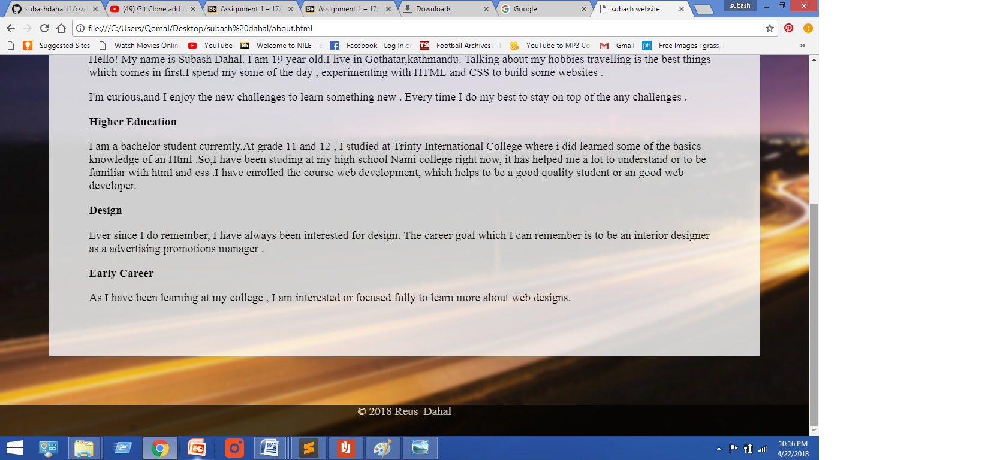
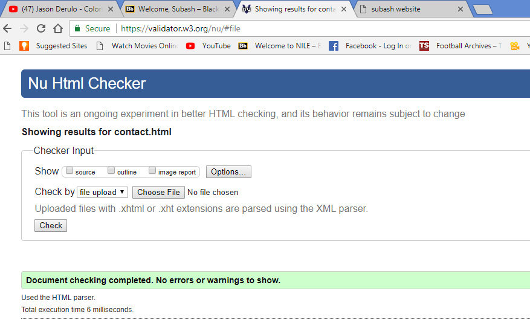

BSC Computing
CSY1018 – Web Development
Submitted By: Subash Dahal
Un Id: 18406486
1)Introduction
2)UI Design :-
a)My experience b)Implementation and Uses c)wireframe design3)Screenshot of my websites
4)Testing
5)Conclusion
6)Reference
Web development is a broad term of the work involved to create a website. It has been one of the important things to us . So to create websites the tools HTML/CSS has been used. It is traditional tools and also common skills to a people.
So there are many types of tools which are found in these days to create a website. It helps to work more efficiently to the developers and designer. It is all related about to explore, challenge and lead to the learning process.User INterface Design (UI) is the design of the user interfaces for any kind of devices like mobile devices and many more other electronic devices.It shows the function of a building or an object before creating it. So, there are different types of software which is used to design HTML, CSS and JAVA which are also one kind of UI design, they are the main known software. Therefore,it may conclude display screens and the appearance of the desktop.
Talking about my experience I have been just involved recently with HTML and CSS for just three months’. I am learning HTML to code and to design website with using CSS these days. It has been one of the interesting things to learn in my lifeand has been extremely helpful for me.
I have some limited knowledge of HTML and CSS which can be less comfortable for manipulating. But I have been improving by learning more things in Html and Css. I think it’s really important to learn how it works. They are just formatting languages, which are easy to learn for us. Being a developer we will be able to communicate with great developers and will be able to learn man details about coding. We must understand the code properly while developing a website for great optimizations.I learned how to make responsive webpage while coding. It helps to change the website completely different and attractive for any devices to work. Before creating the website wireframe mockup is the most important thing to be known or made. Without knowing or creating the wireframe it will be very hard while we code because it helps to identify the class and tags easily.
By studying Html and Css I don’t think it’s too hard to learn. If we can understand or learn the tags, it will be too easier to create the websites by coding. Studying the web development is one the great decision of my life.The flex property helps to change the elements which is a flexible item, if there is not an flexible item the flex properties doesn’t works. It helps to create image in a systematic and an order way which we need.
-Use of css3:It is the new properties to create a website which helps to design the background images, clip, origin and size. It has lots of other functions or properties which help to create a standard website. There are many material design of a css3. Some of them are like properties, transitions and animations. Example of those properties are :- backgrounds, rounded corners ,colors, gradients, shadows , text effects web fonts etc many more other properties are there which we learn in css3.
-Use of form:Forms are made to create on a web page , it helps to user while using checkboxes, radio buttons or any text fields.
-Use of java:In website script tag is used to define a JavaScript. It contains all about the scripting statements. Commonly it is used for validation and manipulation to bring the dynamic changes to website.
So every wireframe are done before creating website.
i)Index.html
ii)About.html
iii)CV.html
iv)Social.html
v)Models.html
vi)Contact.html
1)Index page screnshots
2)About page screenshots
3)CV page screenshots
4)Social page screenshots
5)Contact page screenshoots
1)Index
2)About
3)CV
4)Social
5)Models_gp
6)Contact
7)Styles
8)New
Finally, it is very clear that learning the web development, makes a strong focus to us which leads to the successful development of solutions and can be great to solve the problems which tend to last longer. It is a great opportunity for me to learn such things that is important for my life. Therefore, it is an great experience .
Creating websites makes or increases communication skills. Doing research is the most important thing to learn Html, CSS. Java etc, many other subjects are there which helps to develop our knowledge to be a web developer.
W3SCHOOLS. AVAILABLE FROM: https://www.w3schools.com/tags/.[ACCESED ON April 15th 2018]
Nu Html Checker. AVAILABLE FROM: https://validator.w3.org/nu/#file.[ACCESED ON April 20th 2018]
CSS Validation Service .AVAILABLE FROM: https://jigsaw.w3.org/css-validator/#validate_by_upload .[ACCESED ON April 20th 2018]